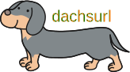

dachsurl
URL短縮ツール(開発中) 🥺


概要
CLIによるシンプルなURL短縮ツール。 入力した冗長なURLをダックスフントの足のように短くします。 URLや足を長くしたいというご要望にはお応えできません。
使用方法
Usage:
dachsurl [OPTIONS] [URLs...]
OPTIONS
-t, --token <TOKEN> bit.lyのトークンを指定します. (必須オプション)
-c, --clipboard 短縮URLをクリップボードに出力します.
-d, --delete 指定した短縮URLを削除します.
-h, --help このメッセージを表示し、終了します.
-v, --version バージョンを表示し、終了します.
ARGUMENT
URL URLは短縮用のURLを指定します。この引数は複数指定できます.
引数が指定されていない場合、dachsurlは利用可能な短縮URLのリストを表示します.
※ 「-c, –clipboard」オプションを指定した状態で、複数URLを指定すると、一番最後のURLがクリップボードにコピーされます.
プロジェクトについて
開発者
HAYASHI Tomokazu
ライセンス
| Permissions | |
|---|---|
| Commercial use | ✅ |
| Modification | ✅ |
| Distribution | ✅ |
| Patent use | ✅ |
| Private use | ✅ |
| Limitations | |
|---|---|
| Trademark use | ❌ |
| Liability | ❌ |
| Warranty | ❌ |
| Conditions | |
|---|---|
| License and copyright notice | ℹ️ |
| State changes | ℹ️ |
アイコン
|  | |
|---|---|
名前の由来
URLをダックスフント(Dachshund)の足のように短くするという由来です。